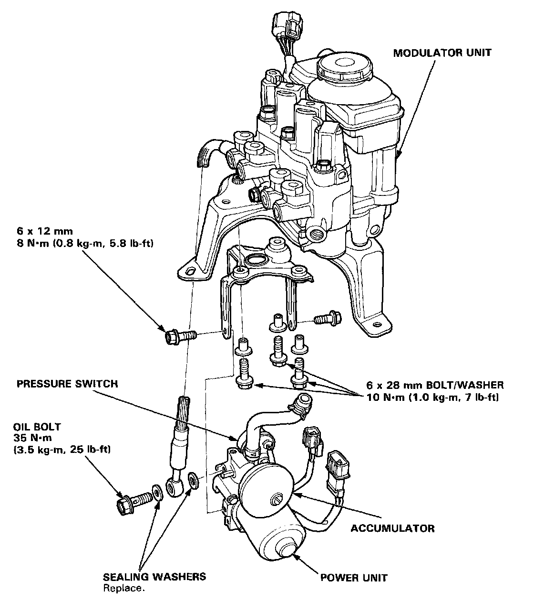

Accumulator Pressure Switch

Power/Accumulator/Pressure Switch Unit
CAUTION:
- Be careful not to bend or damage the brake pipe when removing the power unit and accumulator.
- Do not spill brake fluid on the car; it may damage the paint; if brake fluid does contact the paint, wash it off immediately with water.
- To prevent spills, cover the hose joints with rags or shop towels.
- Before reassembling, check that all parts are free of dust and other foreign particles.
- Do not try to disassemble the power/accumulator unit assembly. Replace the assembly with a new part if necessary.
- Do not mix different brands of brake fluid as they may not be compatible.
- Do not reuse the drained fluid. Use only clean Dot 3 or 4 brake fluid.
- When connecting the brake pipes, make sure that there is no interference between the brake pipes and other parts.
NOTE: Replace the accumulator, power unit, and pressure switch as an assembly.